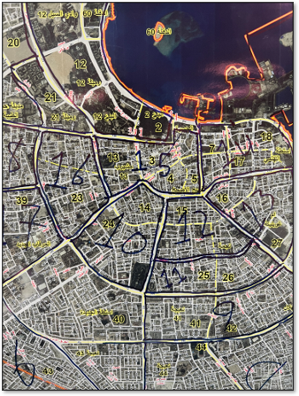

Revenue Enablement — Field Execution Engine
Built the field revenue execution engine for Ooredoo’s SMB business—designing territory coverage, mobile sales infrastructure, and performance governance that increased market coverage from 62% to 89%, achieved 95% forecast accuracy, and enabled sustained growth in a saturated, price-pressured market.
Coverage Model & Territory Economics
Designed and implemented a comprehensive geographic zoning program, dividing the metropolitan area into 65 discrete sales zones, each assigned to a dedicated agent with full ownership and accountability for that territory. Integrated Esri ArcGIS with the CRM to calculate zone size, account density, and revenue potential — enabling data-driven boundary decisions that ensured equitable workload distribution while eliminating coverage gaps and agent overlap. The 27-point coverage gain (verified by independent customer survey) directly expanded the addressable pipeline and anchored sustained revenue growth.

Full coverage of metropolitan area
Lead-to-Field Execution System
Enabled and customized the mobile module of the company's Oracle SFA platform, giving the field team
full lead management capability on the go. Integrated it with the CRM to surface customer contacts,
active services, and account history — enabling informed conversations and on-the-spot appointment
scheduling. Extended the module to allow reps to capture market intelligence in real time, including
competitor services, new contacts, and updated account details.
Telemarketing agents routed qualified leads directly into the mobile SFA in real time,
automatically assigned to the field rep responsible for that zone — closing the loop between
inside-sales prospecting and field follow-up, eliminating manual hand-offs, and ensuring every lead
reached the right agent within minutes of qualification.

Field SFA App
Quote-to-Cash Compression
Equipped every field representative with a rugged, LTE-connected tablet pre-loaded with
the PLM-governed CMS and a digital order form with e-signature
capability. Reps gained real-time access to current pricing, product specs, customer
presentations, competitive battle cards, and the active Sales Play content kits
(talk tracks, discovery banks, objection libraries) — directly inside the customer meeting, with
no dependence on laptops, printouts, or return trips to the office.
Orders could be quoted, signed, and submitted on the spot — compressing time-to-cash and
eliminating the order errors that previously crept in during manual re-keying. The same device fed live
customer, competitor, and market intelligence back into the CRM, turning every field visit into a fully
enabled sales motion and a live data-collection event.

Connected field tablet with real-time collateral access
Forecasting & Operating Cadence
Engineered automated data pipelines with CRM and SFA developers, consolidating sales force
performance into a single operational reporting layer — agent-level attainment
against quota, zone-level coverage and pipeline density,
telemarketing dial volume, conversion, and lead handoff quality,
target attainment vs. plan by week and by rep, and activity ratios
(visits, demos, quotes, closes). Built an ETL layer using SQL and Power Query, then surfaced the
insights through an interactive Excel + Power BI suite that gave every manager a daily line of sight
into how their reps and zones were tracking.
The SMB division quota is cascaded into channel-level commitments across direct field,
indirect
(SOHO partners), retail/shops, telemarketing, and digital, with each channel further cascaded to team,
week, and individual seller. The reporting suite anchored a weekly revenue retro and coaching
cadence that ran the whole cascade as one operating rhythm — turning pipeline review
into a repeatable manager-enablement ritual that lifted forecast accuracy to 95% with
3.3× pipeline coverage.

Unified view into agent and zone weekly performance
- Lifted addressable market coverage from 62% to 89% in three months
- Improved field productivity through territory ownership and data-driven zoning
- Strengthened forecast confidence (95% accuracy / 3.3× pipeline coverage) via weekly retro cadence
- Sustained 5% YoY revenue growth in a saturated, price-pressured market
- Equipped the field force with a unified mobile CRM, in-field collateral, and e-signature stack — turning every visit into an enabled sales motion